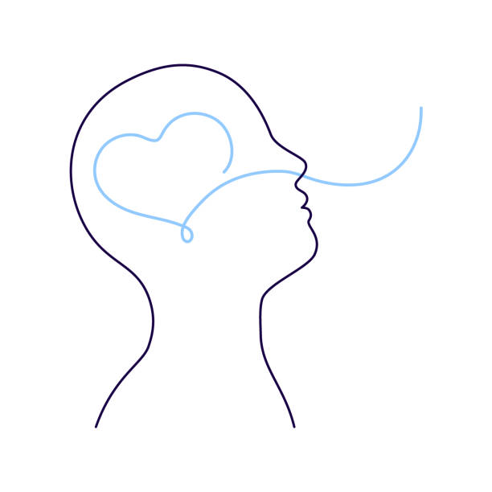
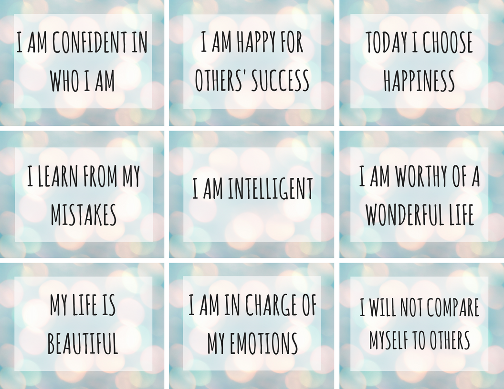

Depression is a mood disorder characterized by persistent feelings of sadness, hopelessness, and loss of interest or pleasure in activities. It can affect how you feel, think, and handle daily activities. Anxiety is a mental health condition characterized by excessive worry, fear, or nervousness about future events or situations. It can manifest as physical symptoms like rapid heartbeat, sweating, and worrying constantly, and can interfere with daily life. Anxiety and depression are complex conditions, often rooted in our relationship with our thoughts and emotions. At Fitness Goals, we understand the importance of addressing these challenges with compassion and practical tools. Our platform offers resources and support to help you navigate your mental health journey effectively. Whether through guided mindfulness practices, personalized fitness plans, or expert advice, we empower you to regain control and find balance in your life.
Depression and Anxiety
Understanding depression and Anxiety is common, but finding effective ways to overcome it is where our focus lies. Regardless of the severity, our website offers practical tips and proven strategies to help you conquer depression and reclaim happiness. Our primary mission is to guide you towards a fulfilling and joyful life, no matter the obstacles you face. With our support and resources, you can embark on a journey towards healing and resilience.
APPROACHES TO END DEPRESSION AND RECLAIM HAPPINESS:
Breathing
Understanding the profound connection between our breath and mental state is essential. The rhythm of our breath reflects our thoughts and emotions. Through mindful breathing, we can effectively navigate through challenges such as depression or negativity. Take a moment to simply observe your breath without altering its natural flow. Over time, you'll notice a gentle, calming effect as your breath naturally deepens and slows. During this practice, if negative thoughts or emotions arise, acknowledge them without reacting. By cultivating this awareness, you'll experience a sense of lightness and relaxation. For further guidance on breathing techniques, visit our website's specialized breathing corner. Explore more at . breathing techniques
Meditation
Making meditation a part of our daily routine is crucial for our mental well-being. Just dedicating 10 to 15 minutes a day can help us tackle any mental discomfort we may face. Through meditation, we connect with something larger than ourselves - the Universe. In the state of meditation one can get energy and relief from the stress and receives power from the infinite. To begin, find a quiet spot with a comfortable yoga mat. Sit upright, close your eyes, and focus on your breath. Notice sensations in your body and accept the sounds around you without reacting. When thoughts or emotions arise, remind yourself they're separate from your true self and gently shift your focus back to the infinite - the GOD. While meditating , make sure to have faith in the God. Remind yourself that "god is there for me" Dive into meditation and unlock the potential for inner transformation. Remember, consistency is key. The more we practice, the easier it becomes to find peace and power. Along with meditation Incorporating yoga and pranayama into your routine can be a simple yet effective way to lift your spirits up and improve your overall well-being. Click here to explore more about Yoga and meditation
Fitness
When was the last time you took a walk, hit the gym, or played an outdoor game? Physical fitness is essential for mental well-being. Neglecting it is like neglecting your personal growth. It's time to start. Begin with a simple walk or jog in a nearby garden. Make new workout buddies to keep you motivated. Dive into outdoor sports for added fun and fitness.
Exercise has been shown to promote neuroplasticity, the brain's ability to adapt and reorganize. Regular physical activity can lead to structural changes in the brain, including increased volume in areas associated with emotion regulation and mood stability.
By incorporating regular physical activity into one's routine, individuals can experience significant improvements in their mood, overall mental well-being, and even a reduction in symptoms of depression. Because our body is not designed for staying idle.
At fitness-goals we have dedicated section for physical fitness ->
Fitness Routines
Positivity
Someone really said the truth, 'What we think, we become.' If we constantly dwell on negativity, we'll find ourselves trapped in a cycle of despair. Negative thinking has disastrous effects, often being a root cause of depression. But how do we break free from this cycle? The answer is simple: flood our minds with intense positivity. When negative thoughts arise, replace them with positive counterparts. Ignore negativity as we would negative personalities. Believe in your worth and potential. Your mind holds immense power. Keep it filled with positivity. Crucially, refrain from harboring ill will towards others. Let go of jealousy and hatred, and instead, nurture love in your heart for everyone. Be selfless and offer support to friends and family. Love is the most powerful thing in Universe.
Sunlight
Sunlight boosts our mood by helping our brain release serotonin, a chemical that makes us feel happy. When we're exposed to sunlight, our brain produces more serotonin, lifting our spirits and making us feel better overall.spending time outdoors in natural sunlight, even for short periods, can have a positive impact on mood, energy levels, and overall mental well-being. Not getting enough sunlight can lower your serotonin levels, which might cause major depression. Studies shown that people with depression have low vitamin D levels. Sun exposure is the most natural way to get enough vitamin D. Therefore Morning sunlight is the best source of vitamin D.

Habits
Habits shape our daily actions and behaviors, crucial for success. Positive habits like setting goals and staying organized enhance productivity and motivation. Conversely, bad habits like fast-food , ciggarattes, mature content etc hinder progress, leading to frustration and stress. These negative patterns can erode self-confidence and contribute to depression. The brain's reward system, especially dopamine, reinforces habits. Breaking bad habits involves rewiring neural pathways through conscious effort and positive reinforcement. Identifying triggers, modifying routines, and fostering supportive environments aid in this process. Understanding habit science empowers individuals to cultivate positive behaviors, unlocking success and emotional well-being. Meditation helps in breaking a bad habit.